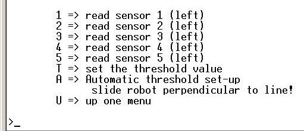

1 => read sensor 1 (left)
1 => read sensor 1 (left)
1 => read sensor 1 (left)
1 => read sensor 1 (left)
1 => read sensor 1 (left)
T => set the threshold value
A => Automatic threshold set-up
slide robot perpendiular to line!
U => up one menu** need to fix menu --
2 => read sensor 2 (left)
>should read<
2 => read sensor 2 (center left) ...Actual program is complete but it will take a while to get around to providing links here for all the menu items.